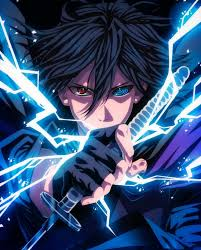

SASUKE UCHIHA
Sasuke Uchiha (うちはサスケ, Uchiha Sasuke) adalah salah satu anggota terakhir klan Uchiha
yang masih bertahan dari Konohagakure. Setelah kakaknya, Itachi, membantai klan mereka,
Sasuke berusaha mewujudkan misinya dalam rangka untuk membalas dendam dengan membunuh Itachi.
Dia dimasukkan ke Tim 7 saat menjadi seorang ninja dan, melalui persaingan dengan rival dan sahabatnya,
Naruto Uzumaki, Sasuke mulai mengembangkan keahliannya. Tidak puas dengan kemajuannya, ia pergi dari
Konoha sehingga ia bisa memperoleh kekuatan yang dibutuhkan untuk membalas dendam. Tahun-tahunnya untuk
membalas dendam menjadi semakin berat, tidak masuk akal dan mengasingkan dia dari orang lain, sehingga
membuatnya menjadi penjahat internasional. Setelah membuktikan dirinya sebagai penolong dalam mengakhiri
Perang Dunia Shinobi Keempat dan dengan senang hati dibebaskan oleh Naruto, Sasuke memutuskan untuk
kembali ke Konoha dan mengabdikan hidupnya untuk membantu melindungi desa serta penduduknya.